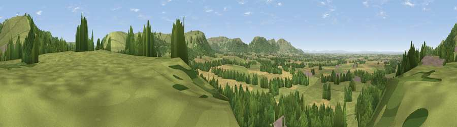

Viewpoint near Easby
#8229 in England · top 27% of its area beats it · near EasbyWhere it is
The exact computed spot (NZ 58725 08588). Click the marker for map links.
The view, rendered

A 360° render of this exact spot computed from the terrain model, tree cover and land cover — summer colours, afternoon light, calibrated against photographs of famous viewpoints. Real trees, hedges and buildings will differ in detail.
The panorama
Grey silhouette: terrain skyline in each direction (720 bearings, Earth curvature and refraction included). Dashed green: skyline with trees (+15 m) and buildings (+8 m) as obstacles. Blue strip: how far the ground is visible on each bearing.
Where the view opens
Wedge length = distance to the farthest visible ground on that bearing (vegetation-aware). Rings at 10, 25 and 50 km.
What fills the view
44% woodland · 42% grassland · 12% cropland · 2% built-up
Angular shares of the visible panorama (visual magnitude), not map area. Landscape diversity 0.46 (0–1 Shannon).
Key numbers
More beautiful places nearby
The staircase of upgrades: each row has a higher view potential than everything closer. Driving times are estimates from straight-line distance, calibrated against real road routing — check an actual route before setting out.
| Place | Direction | Drive | Score |
|---|---|---|---|
| Easby Moor | NNE · 1 km | ~4 min | 78.5 |
| Roseberry Topping | N · 4 km | ~9 min | 85.8 |
| Viewpoint near Lazenby | N · 10 km | ~19 min | 86.4 |
| Warsett Hill | NE · 17 km | ~29 min | 86.8 |
| Viewpoint near Easington | NE · 19 km | ~33 min | 90.2 |
| The Knoll | SSW · 434 km | ~408 min | 91.0 |
54.46927, -1.09542 · source: screening · position refined by local search. Computed location — check access rights before visiting.